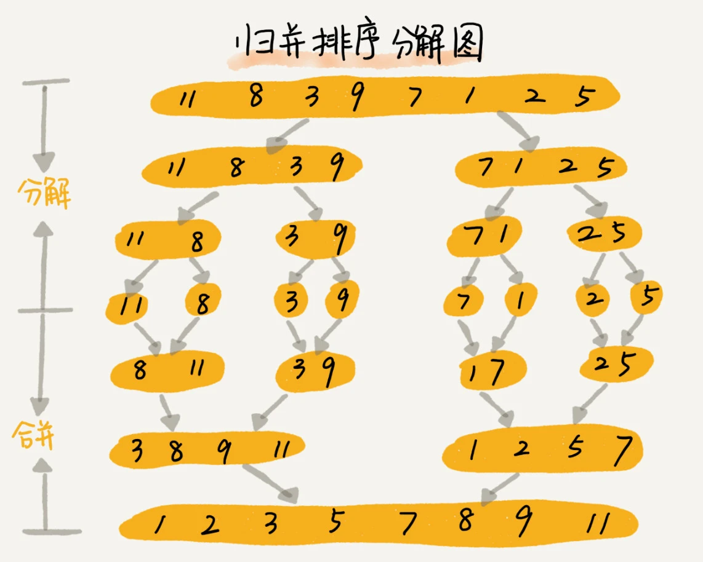

今天来学习排序(下)。
归并排序的原理
核心思想：如果要排序一个数组，先把数组从中间分成前后两部分，然后对前后两部分分别排序，再将排好序的两部分合并在一起，这样整个数组就都有序了。
归并排序使用的是分治思想。分治，顾名思义，就是分而治之，将一个大问题分解成小的子问题来解决，小的子问题解决了，大问题也就解决了。
分治思想跟递归思想很像。分治算法一般都是用递归来实现的。分治是一种解决问题的处理思想，递归是一种编程技巧。
自己又陷入思维误区，试图理解整个递归的过程，然后脑子就懵了...
回顾一下写递归代码的技巧，分析得出递归公式，然后找到终止条件，最后将递推公式翻译成递归代码。
1 | # 递推公式 |
通过递归代码来实现归并排序：
1 | # -*- coding:utf-8 -*- |
通过递归写出来的代码，总想看看递归的过程是什么样的。用文章中这张图来说明。

1 | 初始数组：[11, 8, 3, 9, 7, 1, 2, 5] |
递归真的很难理解呀！
归并排序的性能分析
稳定性
归并排序是稳定的排序算法。在_merge()函数合并两个有序子数组的代码中，当a[i] <= a[j]时，tmp.append(a[i])，即不改变值相同元素的先后顺序，所以归并排序是稳定的排序算法。
时间复杂度
归并排序的时间复杂度是O(nlogn)
归并排序涉及递归，如何分析递归代码的时间复杂度？
如果定义求解问题a的时间是T(a)，求解问题b、c的时间分别是T(b)、T(c)，那么
1 | T(a) = T(b) + T(c) + K |
其中K等于将两个子问题b、c的结果合并成问题a的结果所消耗的时间。
不仅递归求解的问题可以写成递推公式，递归代码的时间复杂度也可以写成递推公式。
假设对n个元素进行归并排序需要的时间是T(n)，那么分解成两个子数组排序的时间都是T(n/2)，_merge()函数合并两个有序子数组的时间复杂度是O(n)(因为两个有序子数组一共有n个元素)。
所以，套用上面的公式，归并排序的时间复杂度的计算公式就是：
1 | T(1) = C; n=1时，只需要常量级的执行时间，所以表示为C |
进一步分解
1 | T(n) = 2*T(n/2) + n |
最终得到T(n) = 2^k * T(n/2^k) + k*n，n代表待排序数组的长度，k代表分解次数，当T(n/2^k)=T(1)时，代表分解数组中个数为1，递归到了尽头，也就是n/2^k=1，此时 \[
k=\log_2n
\] 将k值代入上面的公式，得到 \[
T(n) = Cn + n\log_2n
\] 用大O标记法来表示的话，T(n)=O(nlogn)，所以归并排序的时间复杂度为O(nlogn)
归并排序的执行效率与要排序的原始数组的有序程度无关，其时间复杂度是非常稳定的，不管是最好情况、最坏情况、还是平均情况，时间复杂度都是O(nlogn)
空间复杂度
归并排序的空间复杂度是O(n)。归并排序的时间复杂度任何情况下都是O(nlogn)，看起来非常优秀，但归并排序不是原地排序算法。
因为归并排序的合并函数，在合并两个有序数组为一个有序数组时，需要借助额外的存储空间。如果继续按照分析递归时间复杂度的方法，通过递推公式来求解，那整个归并过程需要的空间复杂度就是O(nlogn)。
实际上，递归代码的空间复杂度并不能像时间复杂度那样累加。尽管每次合并操作都需要额外申请额外的内存空间，但在合并完成之后，临时开辟的内存空间就被释放掉了。在任意时刻，CPU只会有一个函数在执行，也就只会有一个临时的内存空间在使用。临时内存空间最大也不会超过n个数据的大小(只考虑最大临时内存空间就好了)，所以空间复杂度是O(n)。
快速排序的原理
快速排序，简称快排，利用的也是分治思想。
核心思想：
如果要排序数组中下标从
p到r之间的一组数据，我们选择p到r之间的任意一个数据作为pivot(分区点)。遍历
p到r之间的数据，将小于pivot的放到左边，将大于pivot的放到右边，将pivot放到中间。经过这一步骤之后，数组p到r之间的数据就被分成了三个部分，前面p到q-1之间都是小于pivot的，中间是pivot，后面的q+1到r之间是大于pivot的。如图所示，
根据分治、递归的处理思想，可以用递归排序下标从
p到q-1之间的数据和下标从q+1到r之间的数据，直到区间缩小为1，就说明所有的数据都有序了。
递推公式：
1 | # 递推公式 |
通过递归代码来实现快速排序
1 | # -*- coding:utf-8 -*- |
快速排序中有个partition()分区函数，随机选择一个元素作为pivot然后对a[p..r]分区，函数返回pivot的下标。如果不考虑空间消耗，partition分区函数可以写的非常简单。申请两个临时数组X和Y，将小于pivot的元素都拷贝到临时数组X，将大于pivot的元素都拷贝到临时数组Y，最后再将数组X和Y中的元素顺序拷贝到a[p...r]。
但是，如果这样实现的话，快速排序就不是原地排序算法了。如果考虑空间复杂度为O(1)的话，需要用到类似选择排序的处理方式，通过游标j把a[low:high]分成两部分。a[low:j-1]的元素都是小于pivot的，称作“已处理区间”，a[j+1:high]是“未处理区间”。每次从未处理区间取一个值，和pivot对比，如果小于pivot，就把它放到已处理区间的尾部。但在数组某个位置插入元素，需要搬移操作，非常耗时。因此，选择交换的处理方式。
实现方式：通过游标i从前往后遍历数组a，如果a[i]的值小于pivot，则j+=1，说明有一个元素小于pivot，直至遍历结束。最后，交换pivot和下标为j的值。这样，下标j左边的值都小于pivot，右边的值都大于pivot，
归并排序vs快速排序
归并排序的处理过程是由下到上的，先处理子问题，然后再合并。而快排正好相反，它的处理过程是由上到下的，先分区，然后再处理子问题。归并排序虽然是稳定的、时间复杂度为O(nlogn)的排序算法，但是非原地排序算法。而快速排序通过原地分区函数，可以实现原地排序，解决了归并排序占用太多内存的问题。
快速排序的性能分析
稳定性
快速排序是不稳定的排序算法。我这里根据序列6, 8, 7, 6, 3, 5, 9, 4仿照文章中的分析，也画了张图。
显而易见，当比较3<4时，需要交换下标i和j的值，这样第一个6就跑到了第二个6的后面，因此，快速排序是不稳定的排序算法。想了半天想不明白，画了画图，豁然开朗。
评论里说，涉及到交换操作的排序算法都是不稳定的，这里先记录一下，后续验证一下。
时间复杂度
快排也是用递归来实现的，对于上面分析归并排序的公式，对于快排同样适用。如果每次分区操作，都能正好把数组分成大小接近相等的两个小区间，那么快排的时间复杂度递推求解公式跟归并排序是相同的。所以快速排序的时间复杂度是O(nlogn)。
但是，公式成立的前提是每次分区操作，选择的pivot都很合适，正好能将大区间对等地一分为二。但实际上这种情况是很难实现的。
举一个比较极端的例子。如果数组中的数据原来已经是有序的了，比如1, 3, 5, 6, 8。如果每次选择最后一个元素作为pivot，那每次分区得到的两个区间都是不均等的。这种情况下，快排的时间复杂度就从O(nlogn)退化成了O(n^2)。
结论：快速排序在大部分情况下的时间复杂度都可以做到O(nlogn)，只有在极端情况下，才会退化到O(n^2)。
空间复杂度
快速排序是原地排序算法。主要取决于分区函数的实现。
排序算法对比
| 时间复杂度 | 空间复杂度 | 稳定性 | |
|---|---|---|---|
| 冒泡排序 | O(n^2) |
O(1) |
稳定 |
| 插入排序 | O(n^2) |
O(1) |
稳定 |
| 选择排序 | O(n^2) |
O(1) |
不稳定(涉及交换元素) |
| 归并排序 | O(nlogn) |
O(n) |
稳定 |
| 快速排序 | O(nlogn) |
O(1) |
不稳定(涉及交换元素) |
冒泡排序、插入排序、选择排序时间复杂度都为O(n^2)，比较高，适合小规模数据的排序。
归并排序、快速排序时间复杂度都为O(nlogn)，适合大规模的数据排序。
解答开篇
问题：O(n)时间复杂度内求无序数组中的第K大元素？比如，4, 2, 5, 12, 3这样一组数据，第3大元素就是4
答案：利用分区的思想。我们选择数组区间A[0...n-1]的最后一个元素A[n-1]作为pivot，对数组A[0...n-1]原地分区，这样数组就分成了三部分，A[0...p-1]、A[p]、A[p+1...n-1]。
如果p+1=K，那么A[p]就是要求解的元素（如果要查找第3大元素，那么下标为2的元素就是要查找的值）；如果K>p+1，说明第K大元素出现在A[p+1...n-1]区间，然后递归地在A[p+1...n-1]这个区间查找。反之，就在A[0...p-1]区间查找。
那么为什么时间复杂度是O(n)呢？
第一次分区查找，需要对大小为n的数组执行分区操作，需要遍历n个元素。第二次分区查找，只需要对大小为n/2的数组执行分区操作，需要遍历n/2个元素，依次类推，分区遍历的元素个数分别为：n/2、n/4、n/8、n/16...直到区间缩小为1。
把每次分区遍历的元素个数加起来，就是n+n/2+n/4+n/8+n/16+...+1，这是一个等比数列求和。
等比数列求和公式： \[
S_n = \frac{a_1*(1-q^n)}{1-q}=\frac{a_1-a_nq}{1-q}=\frac{a_nq-a_1}{q-1},(q\neq1)
\] 即： \[
S_n = \frac{(1*\frac{1}{2}-n)}{\frac{1}{2}-1}=\frac{1-2n}{1-2}=2n-1
\] 所以上述思路的时间复杂度就为O(n)。
文章中提到一个方法，每次取数组中的最大值，将其移动到数组的最前面，然后在剩下的数组中继续找最大值，以此类推，执行K次，找到的数据不就是第K大元素了吗？
首先，这是选择排序的思路，其次寻找第K大元素的时间复杂度是O(K*n)，并不是O(n)，时间复杂度前面的系数K是比较小的常量时，那么时间复杂度确实是O(n)，但当K等于n/2或是n时，这种最坏情况下的时间复杂度就是O(n^2)。
课后思考
现在有10个接口访问日志文件，每个日志文件大小约300MB，每个文件里的日志都是按照时间戳从小到大排序的。希望将这10个较小的日志文件，合并为1个日志文件，合并之后的日志仍然按照时间戳从小到大排列。如果处理上述排序任务的机器内存只有1GB，有什么好的解决思路，能“快速”地将这10个日志文件合并吗？
来自置顶评论的答案：每次从各个文件中取一条数据，在内存中根据数据时间戳构建一个最小堆，然后每次把最小值给写入新文件，同时将最小值来自的那个文件再出来一个数据，加入到最小堆中。这个空间复杂度为常数，但没能很好利用1G内存，而且磁盘单个读取比较慢，所以考虑每次读取一批数据，没了再从磁盘中取，时间复杂度还是O(n)。